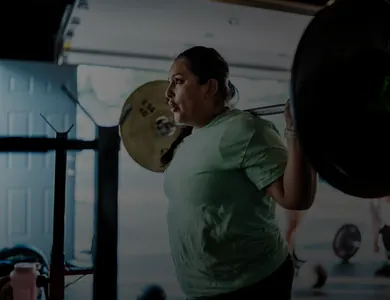
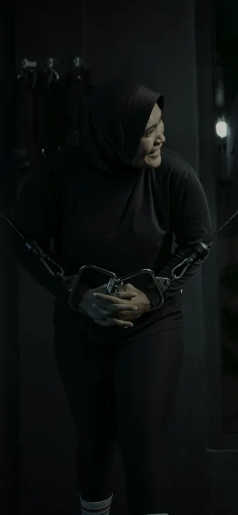

Hoje · Treino A
Hoje · Treino A
Academia Plus — telas novas
Histórico (15/10/2026): telas da fase de musculação (Academia Plus), mantidas como referência dos componentes. As cores já são as da Raça Fight (tokens 2.0.0); as telas de luta estão em luta.html (menu acima).
P09, agente P. Início, Evolução, Modo treino, Comemoração e Painel do dono na linguagem das referências: foto escura, vidro, números enormes, verde vivo. Usa o sistema.css do N sem alterar; o que falta está em novas.css com o prefixo --p-.
5 telas novas em 7 quadros · Android 390 · 390 × 844
Ana, aluna Plus da Academia do Marcos, numa quarta, 14 de outubro. As telas respondem: marque a série no modo treino (o descanso recomeça), toque num grupo da rosca, passe o dedo nos gráficos, dispense o aviso e repita a comemoração.
Quarta, 14 de out.
Olá, Ana
Academia do Marcos · há 2 h
Feriado na segunda, 2/11: abrimos das 8h às 12h.
Sua semana
Você quer treinar 4 dias
2de 4
- 14
Hoje · Treino A
1 · Início do aluno
Saudação, aviso da academia (dispensável), a semana em bolinhas com o "2 de 4" grande, o treino de hoje em foto com vidro e "Começar", a dieta do Plus e quatro atalhos. Abas em vidro flutuante.

Evolução
60kg
15 kg desde 20 de jul.
Maior carga por semana, nas séries feitas
Carga ao longo do tempo
kgVer em tabela
| Semana | Carga |
|---|
Outubro
7 treinostreinounão treinou
Treinos por semana
média 3,4Ver em tabela
| Semana de | Treinos |
|---|
Volume por grupo
4 semanas2 · Evolução
Treinos › Evolução. A carga do exercício escolhido em número enorme sobre a foto e em linha; outubro em mapa de dias; treinos por semana em barras, com a meta de 4 tracejada e a semana em andamento hachurada; volume por grupo em rosca com um grupo em destaque. Sem kcal.
2b · Evolução de quem começou agora
Sem foto e sem número: a frase do tom de voz, um botão para o primeiro treino e o contorno tracejado do que vai aparecer. Nenhum gráfico vazio com eixo zerado.

Peito · 15 kg
Crucifixo no cabo
12repetições
Série 2 de 3
15kg
12reps
Última vez: 3 × 12 · 12,5 kg
PróximoTríceps corda · 4 × 123 · Modo treino (série)
Ao "Começar", o app vai para o escuro em tela cheia, sem abas. Foto grande do exercício, o "12" enorme, e série, carga e "Próximo" num painel de vidro. "Série feita" grava antes de qualquer animação (o tempo aparece embaixo do botão).
Descanso0:45
Série 2 feita · 12 × 15 kg
A seguirSérie 3 de 3 · 12 × 15 kg
3b · Modo treino (descanso)
A mesma foto, desfocada. O anel esvazia em linha reta (efeito 3a do catálogo) e fica laranja nos últimos 10 s. O aviso "Série 2 feita" mora no painel, nunca por cima da série seguinte.
Treino fechado.
Treino A · Peito e tríceps
7exercícios
41minutos
20séries
Supino inclinado subiu: 22,5 → 24 kg
4 · Comemoração
Cor cheia no verde vivo, nos dois temas. O círculo cresce, o check se desenha e o resumo entra em sequência (efeito 2 do catálogo, ~880 ms). "Treino fechado." sem exclamação; a festa é do feito, não do corpo.
Quarta, 14 de out.
Academia do Marcos
Treinos · 7 dias
486
7 dias antes: 512
No Plus
29
de 350 alunos
Sumidos
14
sem treinar há 14 dias ou mais
Ver lista
Frequência
2,3
treinos por aluno ativo, por semana
Treinos por dia
últimos 7 diasVer em tabela
| Dia | Treinos |
|---|
Plus por personal
29 alunos- Carla11
- Diego9
- Rafael8
- 1 sem personalDesignar
Números da academia, somados. Nenhum dado de saúde de aluno aparece aqui.
5 · Painel do dono
Aba Academia. Mais denso, na mesma linguagem: foto da sala, "214" em vidro, quatro quadros, treinos por dia (hoje em destaque) e o Plus por personal, com o aluno sem personal à vista. Tudo somado, sem nome de aluno e sem dado de saúde.
Decisões dos gráficos
Uma cor, a do progresso
Todo gráfico usa uma cor só: --cor-progresso (o verde vivo no escuro, o verde da marca no claro, porque o vivo some no branco). O que não está em destaque fica em cinza. Rótulo e número nunca vão na cor da série.
Rosca com um grupo em destaque
Quatro grupos em quatro cores não passaram no teste de daltonismo (validador do dataviz, protan e deutan). Então a rosca destaca um grupo no verde e põe os outros em três cinzas, separados por 2 px, com nome, % e kg na legenda. Tocar num grupo troca o destaque.
Barras com meta e semana em andamento
A meta (a frequência que a pessoa escolheu) é uma linha tracejada, não um placar. A semana que ainda não acabou fica hachurada, para o "2" de quarta não parecer uma semana ruim.
Sem gráfico vazio
Quem começou agora vê uma frase, um botão e o contorno tracejado do que vai aparecer, nunca um eixo zerado. A linha da carga só aparece com 2 treinos.
Acessível sem cor e sem mouse
Cada gráfico tem "Ver em tabela". As barras e os pontos recebem foco pelo teclado e dizem o valor. A dica aparece no toque, no mouse e no foco.
O dono vê somas
Nada de dado de saúde nem de nome no painel (R6.7). "29 de 350 alunos no Plus", como o tom de voz pede, e não "taxa de conversão 8,3 %".